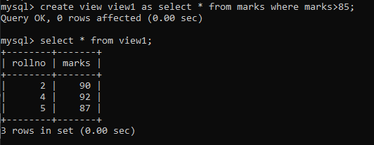

In SQL, a view is a virtual table based on the result-set of an SQL statement.
A view contains rows and columns, just like a real table. The fields in a view are fields from one or more real tables in the database.
You can add SQL statements and functions to a view and present the data as if the data were coming from one single table.
A view is created with the CREATE VIEW statement.
CREATE VIEW Syntax:
CREATE VIEW view_name AS
Output:

2. Deletion of view:
Why use the SQL DROP VIEW statement?
When a view no longer useful you may drop the view permanently. Also if a view needs change within it, it would be dropped and then created again with changes in appropriate places.